Print the tall core
The flat end sits on the Engineering plate. The circular magnet pocket faces upward.

| Project | magnetic-float-aero.3mf |
| Plate | 1 · tall core |
| Nozzle / bed | 270 / 90 °C |
| Chamber | 60 °C |
| Flow / layer | 0.52 / 0.20 mm |
Printing: about 1 h 37 min
- Wash the Engineering plate with dish detergent and warm water. Rinse and dry it.
- Apply a thin, even coat of Bambu liquid glue over the print area and let it dry.
- Select plate 1 and the right ASA Aero feed. Close the door and lid, run room ventilation, and print.